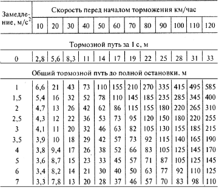
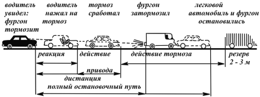
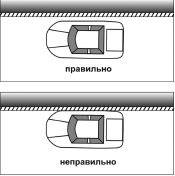
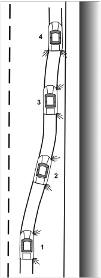
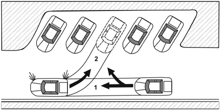
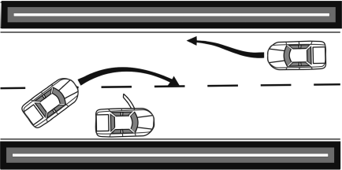

Правила торможения и остановки автомобиля.
Современные автомобили обладают очень высокими скоростными качествами. Чтобы безопасно и быстро остановить машину, нужны исключитель но надежные и исправные тормоза. Чем они надежнее, тем быстрее уменьшается скорость движения автомобиля вплоть до его полной остановки. Начинающий водитель должен обязательно научиться тормозить правильно, без ошибок. Если он уяснит причины возможных ошибок, поймет условия правильного торможения и будет заботиться о совершенном их исполнении, даже если нет необходимости дорожить каждым метром тормозного пути, он сумеет затормозить и в том случае, когда от его умения и готовности, возможно, будет зависеть жизнь человека. Суть торможения состоит в следующем. Во время торможения в тормозных механизмах автомобиля создается тормозной момент, действие которого направлено в сторону противоположную колесу. При этом между колесами и дорогой под действием сил трения возникает тормозная сила, противодействующая движению. Эта сила не должна быть больше силы сцепления колес с дорогой, иначе колеса начнут скользить и автомобиль пойдет юзом. При движении юзом (колеса блокированы) из-за сильного нагрева резины сцепление значительно ухудшается, тормозной путь увеличивается, устойчивость автомобиля значительно уменьшается.
Когда водитель начинает тормозить, приложенная к центру тяжести автомобиля сила инерции направлена вперед и вместе с тормозной силой создает момент, который стремится прижать переднюю часть автомобиля и приподнять заднюю. По этой причине передние тормоза изготовляют более мощными, что позволяет полностью использовать силу сцепления в момент торможения.
В зависимости от вызвавших его причин торможение бывает служебным и экстренным. Экстренное производится с максимально возможной интенсивностью. Его применяют, когда возникает опасность наезда на пешехода, столкновения с идущим впереди или навстречу транспортом и в других критических ситуациях.
Различают несколько основных способов торможения: плавное, резкое, прерывистое и ступенчатое. При плавном водитель мягко нажимает на педаль, постепенно увеличивая давление и плавно замедляя движение автомобиля. При резком на педаль нажимают сильно, стараясь произвести остановку на минимальном расстоянии из-за внезапно возникшей опасности. Основной ошибкой при этом является чрезмерно резкое и сильное усилие на педаль, которое приводит к блокировке колес и юзу. В результате автомобиль теряет управление, а на скользкой дороге его заносит. Резкое торможение, неминуемое на больших скоростях, неприятно для пассажиров, вредно для грузов, сильно изнашивает тормозные накладки, нарушает устойчивость автомобиля и увеличивает расход топлива.
При прерывистом торможении водитель должен сильно и быстро нажать на педаль тормоза, стараясь остановить автомобиль за несколько циклов торможения. Этот способ позволяет избежать блокировки колес и заноса. При ступенчатом торможении водитель должен ослабить давление на тормозную педаль, как только почувствует, что началась блокировка одного из колес. Сразу же после прекращения блокировки он вновь увеличивает давление. Эти действия водитель совершает до полной остановки автомобиля.
Торможения, или замедления, можно достигнуть также с помощью двигателя – при движении с отпущенной педалью управления подачей топлива. Этот способ применяют довольно часто, так как он имеет много преимуществ. При торможении с помощью двигателя на сухой дороге тормозной путь при невыключенном сцеплении на 30–40 % короче, чем при разобщенном с колесами двигателе. Очень эффективно использовать двигатель в качестве тормоза на длинном спуске. В этом случае предотвращаются нагрев и износ тормозных накладок. Если спуск очень крутой и длинный, следует включить II или I передачу. Тогда двигатель без обильной подачи топливной смеси в цилиндры станет работать с большей частотой вращения вала и возрастающим сопротивлением.
Торможение двигателем на спуске следует сочетать с плавным нажимом на тормозную педаль. Если нажимать резко, эффект уменьшается, потому что нагреваются тормоза и их действие становится более слабым. К полной остановке автомобиля торможение двигателем однако не приводит, так как при невыключенном зажигании двигатель все же работает, хотя и не развивает больших крутящих моментов и мощности. После уменьшения скорости автомобиль продолжает медленно катиться или двигаться рывками.
Для экстремального торможения применяют дополнительные приемы, например, комбинированное торможение. При комбинированном торможении водитель наряду с частой, импульсной работой педалью тормоза (ступенчатое торможение) быстро и последовательно переключается на низшие передачи. В этом случае стопа правой ноги левой частью нажимает на педаль тормоза, а правой – на педаль подачи топлива. Такой способ уменьшает возможность блокировки колес и стабилизирует движение автомобиля.
Однако есть одно условие – необходимо научиться делать перегазовку, не прерывая тормажения. На участках с нормальным сцеплением для экстренного торможения лучше подходит плавное и полное нажатие на педаль тормоза. При движении по льду применяют прерывистый и ступенчатый способы торможения, на очень скользкой дороге, когда при малейшем торможении колеса тут же блокируются, лучше применить комбинированный способ.
Таблица 1.

Начинающий водитель должен научиться в любых случаях нажимать на тормозную педаль равномерно, без рывков. Максимальное замедление при торможении достигается на грани блокировки колес. Умение улавливать этот момент и составляет настоящее мастерство торможения. Во всех случаях, кроме аварийных, торможение выполняется плавно; чем выше скорость и хуже сцепление колес, тем плавнее нужно тормозить. В случае резкого торможения колесо со сжатой до предела пружиной подвески (клевок кузова при торможении) без амортизации бьет по ограничителям рычагов с такой силой, что на крыльях образуются характерные провалы, а рычаги гнутся. Опытные водители перед самым препятствием дают сильный газ, машина словно приседает на задние колеса, передние пружины и амортизатор растягиваются, готовые спружинить и принять удар на себя. В этом случае повреждения подвески будут минимальными. Но перед тем, как резко тормозить, нужно взглянуть в зеркало, чтобы не было наезда сзади. Такую же ошибку (резкое нажатие на педаль) часто совершают начинающие водители, если неожиданно попадают в плавный провал дороги. В этом случае автомобиль словно летит в пропасть, нога инстинктивно нажимает на тормоз, передние пружины сжимаются и… Чтобы не было «полетов» с трамплина, на вершине подъема нужно притормозить, учитывая дорожную ситуацию, состояние дорожного покрытия и шин, тип и загруженность автомобиля, скорость, быстроту своей реакции и т. д.
При торможении нужно правильно оценить остановочный путь автомобиля, то есть расстояние, пройденное им с момента обнаружения опасности до полной остановки. Длина остановочного пути включает: путь, пройденный автомобилем за время срабатывания реакции водителя, и тормозной путь – продвижение автомобиля за время срабатывания тормозной системы и в заторможенном состоянии. Протяженность тормозного пути при различных скоростях на хорошей сухой дороге приведена в таблице 1 из которой наглядно видно, как увеличивается тормозной путь в зависимости от возрастания скорости автомобиля. Цифры в графе «Замедление» показывают величину в м/с, на которую скорость автомобиля снижается в каждую секунду, то есть окончательный результат дается в м/с.

Рис. 21. Дистанция безопасности
Реакция водителя зависит от сложности дорожной ситуации, от его личных качеств в достаточно «широком» диапазоне – от 0,2 до 1,2 с и в значительной степени влияет на длину остановочного пути. За это время автомобиль может пройти до половины остановочного пути, поэтому у мест возможного появления опасности нужно заранее перенести ногу на педаль тормоза, что сократит время реакции на 0,2–0,3 с и укоротит остановочный путь. При скорости 60 км/ч на сухом асфальтированном покрытии остановочный путь составляет почти 37 м, на мокром покрытии – 60 м, на обледенелой дороге – 155 м. Длина тормозного пути возрастает не прямо пропорционально скорости. Так, при скорости 80 км/ч на сухой дороге понадобится тормозной путь 71 м, а при скорости 120 км/ч – 145 м.
Начинающий водитель обязан об этом знать. Внезапная остановка, торможение впереди идущего автомобиля почти всегда ведут к столкновению. Вывод – необходимо всегда соблюдать дистанцию безопасности, которая кроме остановочного пути автомобиля должна учитывать тормозной путь транспорта, едущего перед вами. В общем случае к остановочному пути вашего автомобиля нужно добавить резерв примерно в 3 м – это и будет дистанция безопасности (рис. 21).

Рис. 22, а. Остановка с ходу вдоль тротуара
Заключительным этапом торможения является остановка. Для того чтобы остановить автомобиль, нужно снизить скорость, нажать на педаль тормоза, выключить сцепление и перевести рычаг коробки передач в нейтральное положение. Все действия перечислены верно, но есть одна важная особенность, не зная которой, остановка может быть выполнена так, что автомобиль дернется или остановится не там, где нужно. Чтобы снизить скорость необходимо отпустить акселератор, то есть прикрыть дроссельную заслонку карбюратора, двигатель при этом будет снижать число оборотов, вместе с этим снизится и скорость автомобиля; затем переставить рычаг переключения передач в нейтральное положение, автомобиль будет двигаться по инерции, накатом, замедлять движение из-за действующего сопротивления дороги и трения в его механизма и путем нажатия на педаль тормоза притормозить. С падением скорости следует понемногу отпускать педаль тормоза; к моменту остановки автомобиля нажатие на педаль должно быть незначительным; одновременно отпустить педаль акселератора и выключить сцепление. Для полной остановки следует вновь немного нажать на педаль тормоза, а после остановки затянуть рычаг ручного тормоза. Рычаг коробки передач необходимо перевести в нейтральное положение только после включения ручного тормоза, затем отпустить педали сцепления и тормоза. Если дальше ехать не нужно, остановите двигатель и выключить зажигание.
Начинающий водитель должен приучить себя затягивать ручной тормоз до перевода рычага коробки передач в нейтральное положение. Это необходимо делать при любой остановке, какой бы кратковременной она не была.
Интенсивность торможения нужно уменьшать непосредственно перед остановкой, чтобы автомобиль остановился «без клевка». Для этого следует сначала замедлить ход автомобиля до скорости 5–10 км/ч, затем отпустить педаль тормоза и двигаться до нужного места накатом, корректируя движение рулем.
Останавливаясь с ходу вдоль тротуара, нужно рассчитать движение так, чтобы автомобиль расположился параллельно тротуару, но не вплотную и не очень далеко, не более 15–20 см от него (рис. 22 а). Отсутствие зазора между бордюром и колесом приводит к повреждению боковин покрышек и декоративных колпаков, затрудняет отъезд от тротуара. Многие водители припарковывают автомобиль с повернутыми влево передними колесами, что облегчает выезд с места остановки. Последовательность остановки автомобиля вдоль тротуара показана на рисунке 23, а техника ее выполнения следующая. Подъезжая к месту остановки, следует посмотреть в зеркало заднего вида и при отсутствии помех включить указатель поворота. Выполняя перестроение (2), постепенно уменьшайте скорость, внимательно осмотрите место предполагаемой остановки и, плавно поворачивая вправо (3), подъезжайте к бордюру, не касаясь его боковинами шин. Выровняв автомобиль параллельно бордюру (4), окончательно затормозите, отключите сигнал поворота и остановите двигатель. Независимо от способа торможения, кроме экстренного, автомобиль останавливают после снижения скорости до минимальной путем нажатия на педаль рабочего тормоза при выключенной передаче.

Рис. 23. Подъезд к месту стоянки
На подъеме у борта тротуара передние колеса поворачивают налево до упора правого колеса в бортовой камень, а на спуске наоборот. При остановках на подъемах и спусках, следует затормозить автомобиль ручным тормозом, включить пониженную передачу или передачу заднего хода, под колеса подложить упоры.
Гораздо легче ставить автомобиль под углом к тротуару (рис. 24). На стоянку вдоль тротуара можно заезжать передним и задним ходом. Задним ходом заезжают тогда, когда расстояние между стоящими автомобилями минимально, но не меньше чем полторы длины кузова вашего автомобиля, примерно около 6 м. Заезжая задним ходом, проедьте вперед, остановите автомобиль параллельно объезжаемой с интервалом 50–60 см. Тронувшись, быстро поверните рулевое колесо вправо до упора, не упуская из вида правую сторону автомобиля. Затем следует перевести рулевое колесо в крайнее левое положение, следя за прохождением правого переднего крыла около заднего бампера объезжаемой машины. Если правое крыло вашего автомобиля прошло беспрепятственно, можно быстро возвратить рулевое колесо в нейтральное положение, установив автомобиль вдоль тротуара. Подавая автомобиль вперед-назад следует выровнять промежутки между передним и задним автомобилями и затормозить, включив заднюю передачу после остановки двигателя.

Рис. 24. Заезд на стоянку под углом к тротуару
Заезжая передним ходом, нужно оставить справа интервал в один метр и начинать поворачивать рулевое колесо вправо, следя за тем, чтобы не задеть задним крылом или бампером переднюю часть объезжаемого транспортного средства.
Открывая дверцу, следует быть острожным и не заставлять едущего за вами водителя резко менять направление движения, что может привести к аварии (рис. 25).

Рис. 25. Внезапное открытие дверцы опасно